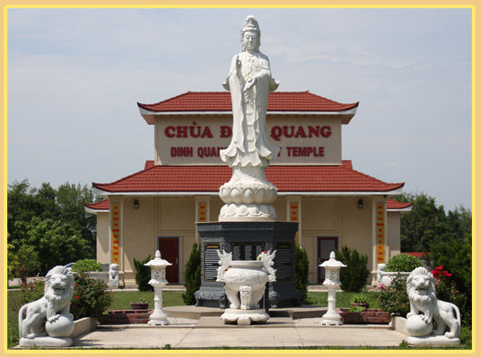

.svg.png)

Welcome to Dinh Quang Temple

Namo A Di Da Phat
Welcome to Dinh Quang Buddhist Temple!
Dinh Quang Temple is a member of the Midwest Sangha of Vietnamese Buddhist
Temples, with communities in twelve states from Texas to Michigan. Our abbot,
the Venerable Thich Thong Chanh, is of the 43rd generation of the Lâm Tế (Linji)
lineage of Vietnamese Thien (Zen).
Everyone is welcome to join us as we practice the Buddha's teachings. We have
services in both Vietnamese and English languages.
Our Vietnamese-speaking services (on Sunday mornings at 10:30 a.m.) reflect our
temple's lineage and culture, with a blend of Pure Land and Zen Buddhism. This
reflects our community's need for a place to preserve and celebrate Vietnamese
Buddhist culture, language, and practice. For more information in Vietnamese,
please contact Venerable Thay (email or phone).
Our English-speaking services (on Sunday mornings at 9 a.m. and Wednesday
evenings at 6 p.m.) are ecumenical, reflecting our community's need for a place for
people from diverse Buddhist backgrounds to encourage one another to practice
with the Buddha's teachings. We also welcome those of other faiths and no faith,
without expectation of conversion and with mutual respect for our shared goal of
cultivating wisdom and compassion.
Both Vietnamese- and English-speaking services share a commitment to practicing
the Buddha's teachings through study, chanting, meditation, ceremonies, and
holiday celebrations under the guidance of our Venerable Thay.
Our English-speaking services are also available online. We livestream most
chanting and meditation services to our Facebook page, and our Dharma classes are
typically available through Google Meet. We are also a participating temple in the
Dharma Teacher Order, which provides online instruction leading to a Certificate in
Buddhist Studies.
For more information, visit our newcomer section by clicking here.